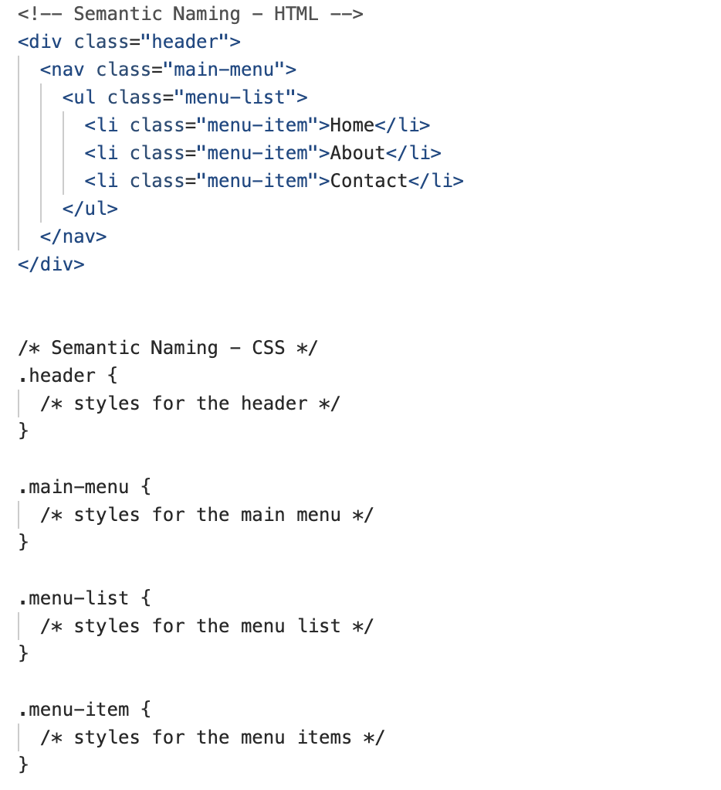
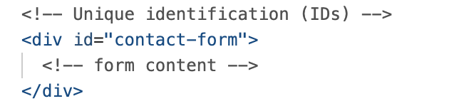
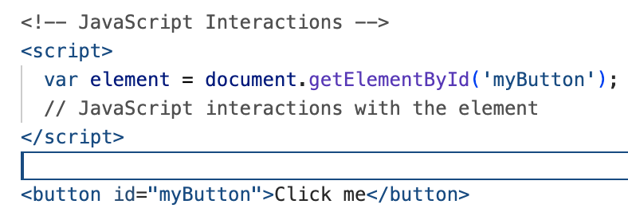

When it comes to using classes and IDs in web development, follow these best practices:
Use classes to group elements with common attributes or styles.
Apply the same class to multiple elements for collective styling or interaction.
Choose meaningful and semantic names for both classes and IDs.
Enhance code readability and facilitate comprehension for other developers.
Avoid using IDs for styling purposes.
Instead, use classes to apply styles to elements.
Maintain a clear separation of concerns for modular and maintainable code.
Use IDs to uniquely identify specific elements on a web page.
Ensure each ID is used only once per page to maintain uniqueness.
Understand that IDs have higher specificity compared to classes.
Avoid using IDs for styling to prevent overly specific and potentially harder-to-maintain CSS rules.
Opt for classes to promote code organization and reusability.
Consider using IDs when interacting with elements through JavaScript.
Alternatively, employ classes with proper event delegation for clearer code.
Minimize the usage of inline styles.
Prefer applying styles using classes or IDs.
Keep CSS separate from HTML for improved code maintainability.
Maintain consistent naming conventions for classes and IDs throughout your project.
Establish a clear and understandable structure to facilitate collaboration.
Design classes and IDs to be modular and reusable.
Encourage separation of concerns and enable code components to be reused in different project areas.
Document the purpose and usage of classes and IDs for future development or collaboration.
Communicate the intended behavior and styling associated with classes and IDs to ensure shared understanding among team members.
By following these best practices, you can optimize the use of classes and IDs in your HTML code.